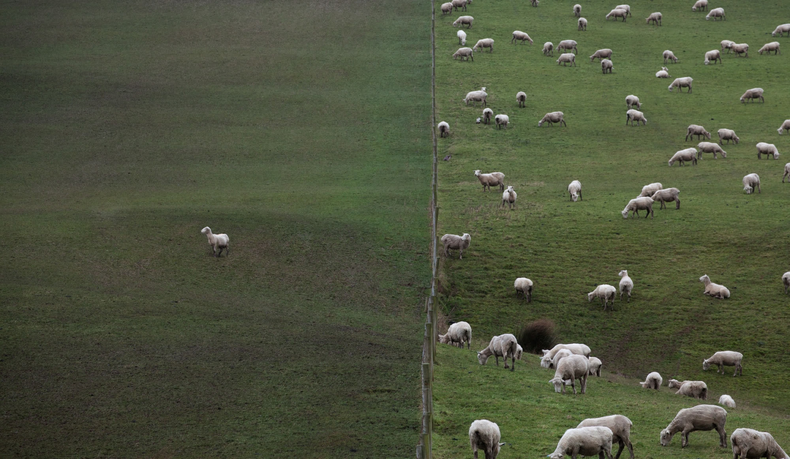

© John Kitching
Following an initial exploration of ‘Lentidão’ with 14 dancers and students from the Performact course for the 2025–26 academic year, the project continues, this time in a professional context, with a new artistic team.
‘Lentidão’ is a contemporary dance piece that explores time and its relationship with experiences, memory and emotion. In this project, time is understood as a tool for resistance, and slowing down as a potential language of affection, connection and listening.
The first collaboration between the creator Juliana Fernandes and three co-creating performers – Bharat Yadav, Carolina Sendim and Maru Oliveira – this work draws on the reflections set out in Milan Kundera’s Slowness to explore the relationship between speed and forgetting, slowness and memory; and on Byung-Chul Han’s The Scent of Time, which examines the crisis of time in contemporary society.
In today’s world, characterised by constant acceleration, hyper-production and instant consumption, time ceases to be an experience and becomes a matter of management: the urgency to respond and the search for quick solutions distance us from our inner rhythms and from listening to others. This work seeks to reconfigure the relationship between doing and feeling, calling upon the body as a vehicle for attention and presence. It proposes the body as a site for the re-inscription of time – a territory where different temporal layers accumulate, coexist and are reactivated.
Understood as an archive, the body accumulates fragmented memories, temporal overlaps, conflicting rhythms and lapses. Slowing down emerges as a practice of excavating these layers, revealing how different speeds coexist. Slowness functions here as a magnifying lens: it makes memories, experiences, projections and desires visible, and shows how the bodies that recall and carry them move.
The interplay of speeds between bodies will be one of the central dramatic drivers. The exploration will focus on the clash, dialogue and convergence between different rhythms, questioning whether slowness might, paradoxically, be the most profound path for intensity and affect to manifest themselves. Slowness, then, is not perceived as an absence of action, but rather as the creation of space for time to manifest itself. Dwelling within time, rather than chasing it, becomes a choreographic gesture and an artistic stance.
Concept and Creation - Juliana Fernandes
Co-creation and Performance - Carolina Sendim, Maru Oliveira and Bharat Yadav
Dramaturgical Support - Inês Marques Fernandes
Audiovisual Recording - Henrique Rocha
Photography - John Kitching
Residency Support - Sekoia Artes Performativas, CDV – Teatro do Noroeste and Teatro Municipal Sá de Miranda, Performact, Baleria Barca D’artes and Malandra Coletivo
Promotion and Communication Support - Gabinete da Juventude / Câmara Municipal de Viana do Castelo; Malandra Coletivo / Pétala Colateral – Associação Artística e Cultural
Presentation Partnership - Escola Superior de Música e Artes do Espetáculo
Financial Support - Fundação GDA – Apoio à criação em Teatro e Dança 2026
Oct 26–30, 2026 | Sekoia Artes Performativas, Porto
Nov 9–13, 2026 | Sekoia Artes Performativas, Porto
Nov 16–28, 2026 | Performact, Torres Vedras
Dec 1–11, 2026 | Teatro Municipal Sá de Miranda, Viana do Castelo

© John Kitching